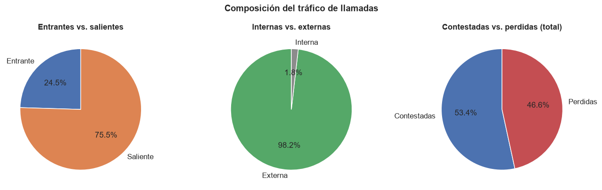
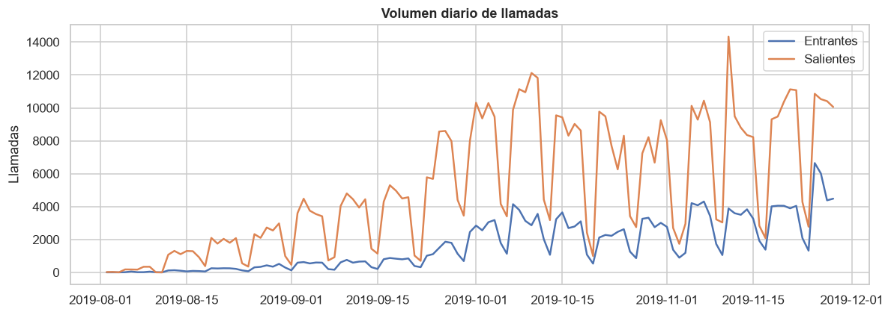
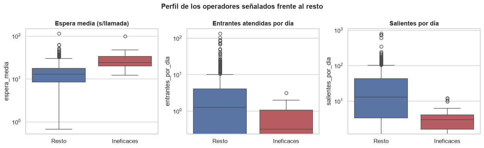
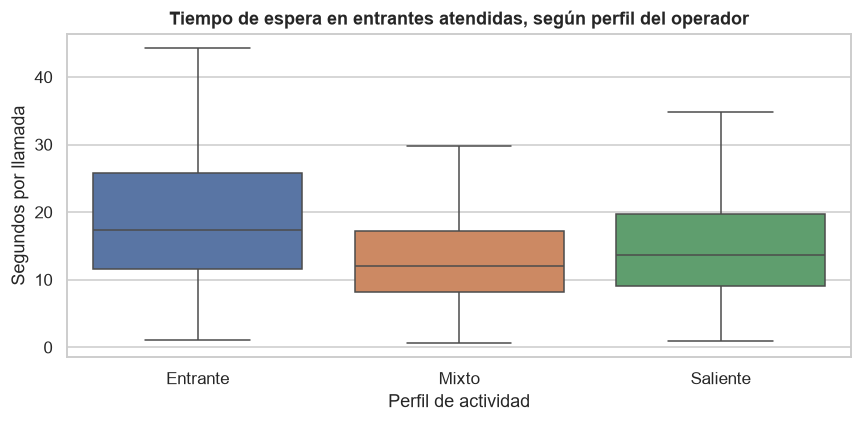
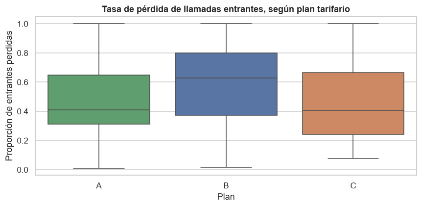

CallMeMaybe — Operadores Ineficaces
Diagnóstico de operadores ineficaces en un servicio de telefonía virtual, a partir de un enunciado ambiguo que hubo que operacionalizar con criterios explícitos y reproducibles.
Resumen ejecutivo
CallMeMaybe pidió identificar operadores de bajo desempeño en su servicio de telefonía virtual. El enunciado original no definía qué significa "ineficaz", así que el primer trabajo fue construir esa definición operativa (llamadas entrantes perdidas, espera prolongada y bajo volumen de salientes en perfiles que deben hacerlas) antes de calcular nada. El análisis combina limpieza y agregación por operador en Python, dos pruebas de hipótesis con corrección de Holm, y un dashboard interactivo en Tableau Public con la actividad diaria del servicio.
Contexto / Problema
Los datos registran cada llamada (entrante/saliente, interna/externa, contestada/perdida, duración, espera) asociada a un operador y a un cliente con un plan tarifario. El reto central es que los datos no registran quién debía atender una llamada perdida, por lo que gran parte de la señal que pide el enunciado es, en rigor, inmedible a nivel individual — algo que solo se descubre auditando el propio dataset antes de construir el diagnóstico.
Datos
| Característica | Detalle |
|---|---|
| Fuente | Dataset del curso TripleTen — telefonía virtual CallMeMaybe |
| Archivos | telecom_dataset_new.csv (registro de llamadas), telecom_clients.csv (plan tarifario por cliente) |
| Cobertura | Agosto–noviembre de 2019 |
| Granularidad | Una fila por llamada, con operador, dirección, duración y espera |
Herramientas y tecnologías
Análisis y estadística
Visualización
Dashboard
Datos y entorno
Metodología / Proceso
Descomposición del problema
Operacionalización del enunciado ambiguo en un plan de análisis explícito y verificable antes de tocar los datos.
Limpieza y agregación por operador
Clasificación de operadores por perfil de actividad (entrante / mixto / saliente) y agregación de métricas de espera, duración y volumen.
Índice de ineficacia
Promedio de rangos percentiles dentro del perfil de cada operador; umbral adoptado en el percentil 80 para señalar operadores ineficaces.
Hipótesis 1 — espera por perfil
¿Los operadores especializados en entrantes esperan más por llamada que los mixtos? Prueba de hipótesis con corrección de Holm.
Hipótesis 2 — pérdida por plan
¿El plan tarifario del cliente condiciona la tasa de llamadas entrantes perdidas? Comparación entre planes A, B y C.
Dashboard Tableau
Publicación en Tableau Public de la actividad diaria del servicio: duración de llamadas, tipo de llamada y tasa de pérdida por plan, con filtros interactivos.
Mi rol y contribución
- Diseñé el plan de descomposición del problema (
01_decomposicion.ipynb) a partir de un enunciado que no definía "operador ineficaz", proponiendo criterios explícitos y verificables. - Construí el índice de ineficacia como promedio de rangos percentiles dentro del perfil de cada operador, evitando penalizar a un operador entrante por no hacer tantas salientes como uno saliente.
- Formulé y verifiqué las dos hipótesis del caso con la corrección de Holm para comparaciones múltiples, en vez de reportar p-valores sin ajustar.
- Identifiqué la limitación de fondo del dataset (no se registra a quién correspondía atender una llamada perdida) y la documenté explícitamente en vez de forzar una conclusión que los datos no sostienen.
- Diseñé y publiqué el dashboard en Tableau Public con los datos ya agregados desde el propio notebook de análisis.
Resultados e insights
| Análisis | Hallazgo |
|---|---|
| Diagnóstico general | Más de la mitad de las llamadas entrantes se pierden; el 99% de esas pérdidas no puede atribuirse a ningún operador — es un problema de cobertura, no de desempeño |
| Operadores ineficaces | Grupo identificable (espera ~2× mayor, menor volumen) pero mueve apenas el 1,2% del tráfico total |
| Hipótesis 1 | Confirmada: espera mediana de 17,4s en especializados en entrantes vs. 12,0s en mixtos, tras corrección de Holm |
| Hipótesis 2 | Confirmada: clientes del plan B pierden significativamente más llamadas entrantes que los del plan C |

Composición del tráfico: 46,6% de las llamadas totales se pierden

Volumen diario de llamadas: crecimiento sostenido del servicio en el período analizado

Perfil de los operadores señalados como ineficaces frente al resto: más espera, menos volumen

Hipótesis 1 — los operadores especializados en entrantes esperan más por llamada

Hipótesis 2 — el plan B presenta una tasa de pérdida de entrantes significativamente mayor
Conclusiones
El problema principal del servicio no está en los operadores individuales: la mayoría de las llamadas perdidas no puede atribuirse a nadie en particular, lo que apunta a un déficit de cobertura o dotación, no a bajo desempeño. La función solicitada (señalar operadores ineficaces) es técnicamente viable y sí identifica un grupo con métricas peores, pero su impacto sobre el tráfico total es marginal. Ambas hipótesis de negocio se confirman estadísticamente: la especialización en entrantes se asocia a peores tiempos de espera, y el plan tarifario del cliente condiciona la calidad del servicio que recibe.